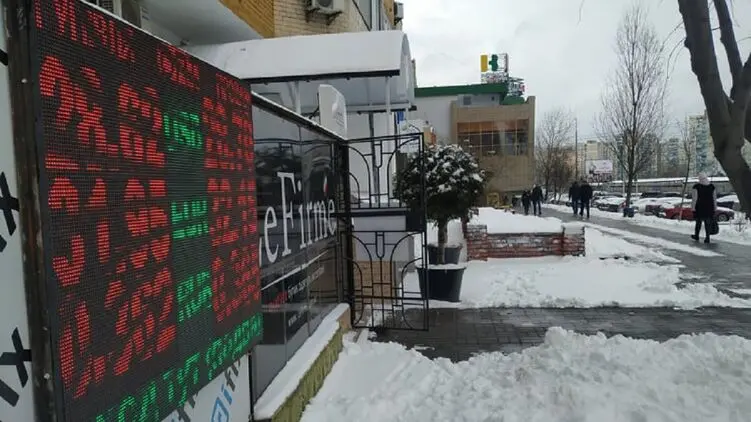

Доллар в Украине снова дорожает. Что будет дальше с гривней?
Во вторник, 1 февраля, безналичный доллар подорожал на 2 копейки, и межбанк закрылся в рамках 28,41-28,43 грн/$. Хотя в течения котировки проваливались до 28,27 грн/$, однако поднялись к вечеру. На наличном рынке валюта продолжала дешеветь. Средние курсы обменников на продаже "американца" опустились на 10-25 копеек, на покупке - на 10:
- до 28,40-28,60 грн/$ - продажа;
- до 28,10-28,30 грн/$ - покупка.
Максимальный ценник на покупке отошел с 28,90 грн/$ до 28,75 грн/$, его ставил Кристаллбанк. Валютный спрос со стороны населения был не очень большой. На оптовом наличном рынке средние расценки просели с 28,40-28,45 грн/$ до 28,32-28,35 грн/$.
Ситибанк взял больше Нацбанка
На межбанке котировки прыгали в разные стороны целый день. Объем сделок на площадке Bloomberg уменьшился с $373 млн до $235 млн. Нацбанк купил в резервы $30 млн, проводил сделки по 28,29 грн/$. "Сегодня мы открылись со значительной просадкой курса доллара по сравнению с закрытием вчерашнего дня. Активные валютные продажи в начале торгов были встречены покупками со стороны регулятора на отметке 28,29 грн/$. После чего рынок развернулся и на покупках со стороны банков-нерезидентов мы смогли протестировать уровни 28,42 грн/$. К обеду на торгах вновь оживились продавцы, и межбанк на какое-то время вернулся на уровень 25,345-28,355 грн/$, но повторный выход на рынок нерезидентов спровоцировал возврат торгов к уровням сегодняшних максимумов - 28,41-28,425 грн/$", - рассказал "Стране" казначей банка "Кредит Днепр" Юрий Гриненко. Курсовой минимум сегодняшнего дня - 28,27 грн/$, он был достигнут в 10 утра. А максимум -28,45 грн/$, к нему межбанк приходил в районе обеда, и туда же котировки пытались довести вечером.Раскачку курса в разные стороны объясняли покупками Нацбанка, а также иностранцев, которые два раза выходили скупаться и приобрели больше доллара, чем регулятор. По разным оценкам, Ситибанк купил сегодня порядка $50 млн. "Иностранцы не проводили крупных сбросов пакетов наших гособлигаций: за день нерезидентский портфель ОВГЗ сократился лишь на 75,8 млн грн, до 80,17 млрд грн. Скорее всего, доллар закупали под вывод репатриацию дивидендов - нормальная история дня начала месяца. Еще немного активнее обычного валюту подкупали нефтетрейдеры, которые сейчас пополняют свои топливные запасы", - объяснил "Стране" директор казначейства крупного банка."Курс снова становится привлекательным для покупателей, потому валюту активнее берут. Не только иностранцы, хотя те продолжают выводить капиталы из Украины (правда, в меньших темпах), но и импортеры. Плюс видим покупки доллара под традиционный для начала месяца вывод дивидендов", - прокомментировал "Стране" ситуацию руководитель отдела аналитики ГК Forex Club Андрей Шевчишин.
Минфин провалил размещение ОВГЗ
Министерство финансов сегодня провалило размещение новых выпусков ОВГЗ. Совокупно смогло привлечь лишь 213,8 млн грн. Это минимум не только 2022 года, но и всего 2021-го.До этого, финансисты называли самой неудачной по заимствованиям для правительства прошлую неделю (25 января), когда оно смогло одолжить лишь 2,8 млрд грн. Для сравнения: по время последнего размещения 2021 года (28 декабря) Минфину удалось продать своих гособлигаций на 15 млрд грн.Из 7-ми изначально анонсированных выпусков ОВГЗ Минфин сегодня размещал только 5, и продажи 2-х видов бумаг в итоге признал не состоявшимися. Смог продать только три серии. Одна в долларе на 12 месяцев - на $4,6 млн под 3,7% годовых, и две в гривне:
- на 67,2 млн грн - 6 месяцев под 11,5% годовых;
- на 16,1 млн грн - 2 года под 13% годовых.
сего власти получат 83 млн грн + $4,6 млн. Это ничто, но лучше, чем признать размещение не состоявшимся, считают некоторые чиновники."Ситуация с привлечением гривны очень сильно тревожит. Где брать средства для обслуживания и погашения долга, финансирования проектов - непонятно", - заметил Андрей Шевчишин.При этом правительству в феврале предстоит несколько крупных погашений старых выпусков ОВГЗ. Как в гривне, так и в инвалюте и начнутся они прямо завтра-послезавтра:
- 2 февраля - 11,5 млрд грн;
- 3 февраля - $367,9 млн;
- 17 февраля - €349,2 млн;
- 23 февраля - 17,99 млрд грн.
Суммы серьезные и привлекая по 213,8 млн грн в неделю их, конечно, рефинансировать не получится. Нужно будет изыскивать текущие бюджетные поступления. Причем, это выплаты без процентов (купона), с ними еще больше получится.Например, завтра, 1 февраля предстоит выплата по гривневым ОВГЗ 11,5 млрд грн в рамках погашения + 2 млрд грн купона (процентов). Что может давить на валютный рынок.
Что дальше будет с курсом
Источники "Страны" сообщили, что иностранцы получат в рамках завтрашнего погашения гривневых гособлигаций не очень много - порядка 750 млн грн. Это около $26 млн. Гасится 12-месячная облигация, которая размещалась 2 февраля 2021 года под 11,4% годовых."Эти выплаты по ОВГЗ могут не спровоцировать прямого давления на межбанк и на нацвалюту. Иностранцы получат не очень много. Но дополнительные вливания гривны придутся на наши банки, которые получат новые средства для спекуляций. Часть этих средств попадет на межбанк, часть - в депозитные сертификаты Нацбанка. Потому давление на курс может ощущаться", - отметили "Стране" в казначействе одного из банков.Плюс финансисты ждут завтра дальнейших покупок доллара под вывод дивидендов. Потому допускают раскачку курса в широком диапазоне - от 28,30 грн/$ до 28,50-28,55 грн/$.
Новые требования Нацбанка
Активное связывание гривневого ресурса должно случиться с 11 марта, когда банки сформируют резервы по новым требованиям Нацбанка, которые он утвердил решением №44-рш и объявил сегодня. Резервы поднимают вложениям на текущих счетах:
-
в гривне - с 0% до 2%;
- до 31,90-32,25 грн/€ - продажа;
- до 31,40-31,80 грн/€ - покупка.
- в инвалюте - с 10% до 12%.
"Регулятор ужесточил резервирование, чтобы связать гривневую ликвидность. Ресурс подорожает. А главное - валютным спекулянтам немного свяжут руки, чтобы они меньше качали курс межбанка", - объяснили "Стране" в одном из системных банков.По подсчетам НБУ, банкам придется дополнительно потратить на резервирование около 24 млрд грн, это порядка $850 млн. Ощутимый объем, если учесть, что в январе 2022 года суточный объем торгов на площадке Bloomberg находился в рамках $200-500 млн.
Евро вырос на хороших новостях
На мировом рынке доллар сегодня дешевел, а курс евро приподнялся с $1,1236/€ до $1,1265/€ после биржевой торговли в рамках $1,1221-1,1279/€.Ранки отреагировали на отчеты из Европы. Выяснилось, что индекс деловой активности (PMI) в области промышленного производства 19 стран еврозоны поднялся в прошлом месяце с 58 пунктов до 58,7, по окончательной оценке. А Германия выпустила отчет о снижении безработицы с 7% до 5,1%, хотя аналитики прогнозировали 5,2%.На этой волне инвестфонды активнее раскупали евровалюту.В Украине средний наличный курс евро поднялся на 5 копеек на продаже и на 15 копеек на покупке: